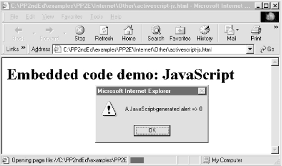
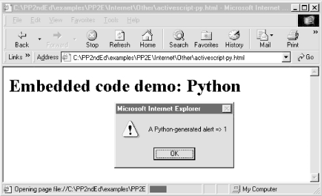
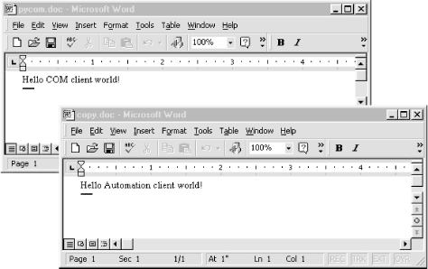
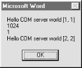
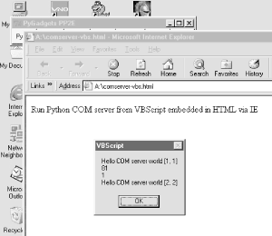

| I l@ve RuBoard |
|
15.8 Windows Web Scripting ExtensionsAlthough this book doesn't cover the Windows-specific extensions available for Python in detail, a quick look at Internet scripting tools available to Windows programmers is in order here. On Windows, Python can be used as a scripting language for both the Active Scripting and Active Server Pages systems, which provide client- and server-side control of HTML-based applications. More generally, Python programs can also take the role of COM and DCOM clients and servers on Windows. You should note that at this point in time, everything in this section works only on Microsoft tools, and HTML embedding runs only under Internet Explorer (on the client) and Internet Information Server (on the server). If you are interested in portability, other systems in this chapter may address your needs better (see JPython's client-side applets, PSP's server-side scripting support, and Zope's server-side object publishing model). On the other hand, if portability isn't a concern, the following techniques provide powerful ways to script both sides of a web conversation. 15.8.1 Active Scripting: Client-Side EmbeddingActive Scripting is a technology that allows scripting languages to communicate with hosting applications. The hosting application provides an application-specific object model API, which exposes objects and functions for use in the scripting language programs. In one if its more common roles, Active Scripting provides support that allows scripting language code embedded in HTML pages to communicate with the local web browser through an automatically exposed object model API. Internet Explorer, for instance, utilizes Active Scripting to export things such as global functions and user-interface objects for use in scripts embedded in HTML. With Active Scripting, Python code may be embedded in a web page's HTML between special tags; such code is executed on the client machine and serves the same roles as embedded JavaScript and VBScript. 15.8.1.1 Active Scripting basicsUnfortunately, embedding Python in client-side HTML works only on machines where Python is installed and Internet Explorer is configured to know about the Python language (by installing the win32all extension package discussed in a moment). Because of that, this technology doesn't apply to most of the browsers in cyberspace today. On the other hand, if you can configure the machines on which a system is to be delivered, this is a nonissue. Before we get into a Python example, let's look at the way standard browser installations handle other languages embedded in HTML. By default, IE (Internet Explorer) knows about JavaScript (really, Microsoft's Jscript implementation of it) and VBScript (a Visual Basic derivative), so you can embed both of those languages in any delivery scenario. For instance, the HTML file in Example 15-9 embeds JavaScript code, the default IE scripting language on my PC. Example 15-9. PP2E\Internet\Other\activescript-js.html<HTML>
<BODY>
<H1>Embedded code demo: JavaScript</H1>
<SCRIPT>
// popup 3 alert boxes while this page is
// being constructed on client side by IE;
// JavaScript is the default script language,
// and alert is an automatically exposed name
function message(i) {
if (i == 2) {
alert("Finished!");
}
else {
alert("A JavaScript-generated alert => " + i);
}
}
for (count = 0; count < 3; count += 1) {
message(count);
}
</SCRIPT>
</BODY></HTML>
All the text between the <SCRIPT> and </SCRIPT> tags in this file is JavaScript code. Don't worry about its syntax -- this book isn't about JavaScript, and we'll see a simpler Python equivalent in a moment. The important thing to know is how this code is used by the browser. When a browser detects a block of code like this while building up a new page, it locates the appropriate interpreter, tells the interpreter about global object names, and passes the code to the interpreter for execution. The global names become variables in the embedded code and provide links to browser context. For instance, the name alert in the code block refers to a global function that creates a message box. Other global names refer to objects that give access to the browser's user interface: window objects, document objects, and so on. This HTML file can be run on the local machine by clicking on its name in a file explorer. It can also be stored on a remote server and accessed via its URL in a browser. Whichever way you start it, three pop-up alert boxes created by the embedded code appear during page construction. Figure 15-5 shows one under IE. Figure 15-5. IE running embedded JavaScript codeThe VBScript (Visual Basic) version of this example appears in Example 15-10, so you can compare and contrast.[7] It creates three similar pop-ups when run, but the windows say "VBScript" everywhere. Notice the Language option in the <SCRIPT> tag here; it must be used to declare the language to IE (in this case, VBScript) unless your embedded scripts speak in its default tongue. In the JavaScript version in Example 15-9, Language wasn't needed, because JavaScript was the default language. Other than this declaration, IE doesn't care what language you insert between <SCRIPT> and </SCRIPT>; in principle, Active Scripting is a language-neutral scripting engine.
Example 15-10. PP2E\Internet\Other\activescript-vb.html<HTML>
<BODY>
<H1>Embedded code demo: VBScript</H1>
<SCRIPT Language=VBScript>
' do the same but with embedded VBScript;
' the Language option in the SCRIPT tag
' tells IE which interpreter to use
sub message(i)
if i = 2 then
alert("Finished!")
else
alert("A VBScript-generated alert => " & i)
end if
end sub
for count = 0 to 2 step 1
message(count)
next
</SCRIPT>
</BODY></HTML>
So how about putting Python code in that page, then? Alas, we need to do a bit more first. Although IE is language-neutral in principle, it does support some languages better than others, at least today. Moreover, other browsers may be more rigid and not support the Active Scripting concept at all. For example, on my machine and with my installed browser versions (IE 5, Netscape 4), the previous JavaScript example works on both IE and Netscape, but the Visual Basic version works only on IE. That is, IE directly supports VBScript and JavaScript, while Netscape handles only JavaScript. Neither browser as installed can run embedded Python code, even though Python itself is already installed on my machine. There's more to do before we can replace the JavaScript and VBScript code in our HTML pages with Python. 15.8.1.2 Teaching IE about PythonTo make the Python version work, you must do more than simply installing Python on your PC. You must also register Python with IE. Luckily, this is mostly an automatic process, thanks to the work of the Python Windows extension developers; you merely need to install a package of Windows extensions. Here's how this works. The tool to perform the registration is part of the Python Win32 extensions, which are not included in the standard Python system. To make Python known to IE, you must:
The win32all package includes the win32COM extensions for Python, plus the PythonWin IDE (a simple interface for editing and running Python programs, written with the MFC interfaces in win32all) and lots of other Windows-specific tools not covered in this book. The relevant point here is that installing win32all automatically registers Python for use in IE. If needed, you can also perform this registration manually by running the following Python script file located in the win32 extensions package: python\win32comext\axscript\client\pyscript.py. Once you've registered Python with IE this way, Python code embedded in HTML works just like our JavaScript and VBScript examples -- IE presets Python global names to expose its object model and passes the embedded code to your Python interpreter for execution. Example 15-11 shows our alerts example again, programmed with embedded Python code. Example 15-11. PP2E\Internet\Other\activescript-py.html<HTML>
<BODY>
<H1>Embedded code demo: Python</H1>
<SCRIPT Language=Python>
# do the same but with python, if configured;
# embedded python code shows three alert boxes
# as page is loaded; any Python code works here,
# and uses auto-imported global funcs and objects
def message(i):
if i == 2:
alert("Finished!")
else:
alert("A Python-generated alert => %d" % i)
for count in range(3): message(count)
</SCRIPT>
</BODY></HTML>
Figure 15-6 shows one of the three pop-ups you should see when you open this file in IE after installing the win32all package (you can simply click on the file's icon in Windows' file explorer to open it). Note that the first time you access this page, IE may need to load Python, which could induce an apparent delay on slower machines; later accesses generally start up much faster because Python has already been loaded. Figure 15-6. IE running embedded Python codeRegrettably, this example still works only on IE Version 4 and higher, and not on the Netscape browser on my machine (and reportedly fails on Netscape 6 and Mozilla as well). In other words (at least today and barring new browser releases), not only is Active Scripting a Windows-only technology, but using it as a client-side web browser tool for Python works only on machines where Python is installed and registered to IE, and even then only under IE. It's also worth knowing that even when you do get Python to work under IE, your Python code runs in restricted mode, with limited access to machine resources (e.g., your code can't open sockets -- see the rexec module description earlier in this chapter for details). That's probably what you want when running code downloaded over the Net, and can be changed locally (the implementation is coded in Python), but it limits the utility and scope of your Python scripts embedded in HTML. The good news is that this does work -- with a simple configuration step, Python code can be embedded in HTML and be made to run under IE, just like JavaScript and VBScript. For many applications, the Windows and IE-only constraint is completely acceptable. Active Scripting is a straightforward way to add client-side Python scripting for web browsers, especially when you can control the target delivery environment. For instance, machines running on an Intranet within a company may have well-known configurations. In such scenarios, Active Scripting lets developers apply all the power of Python in their client-side scripts. 15.8.2 Active Server Pages: Server-Side EmbeddingActive Server Pages (ASPs) use a similar model: Python code is embedded in the HTML that defines a web page. But ASP is a server-side technology; embedded Python code runs on the server machine and uses an object-based API to dynamically generate portions of the HTML that is ultimately sent back to the client-side browser. As we saw in the last three chapters, Python server-side CGI scripts embed and generate HTML, and deal with raw inputs and output streams. By contrast, server-side ASP scripts are embedded in HTML and use a higher-level object model to get their work done. Just like client-side Active Scripting, ASP requires you to install Python and the Python Windows win32all extensions package. But because ASP runs embedded code on the server, you need to configure Python only on one machine. Like CGI scripts in general, this generally makes Python ASP scripting much more widely applicable, as you don't need Python support on every client. Unlike CGI scripts, however, ASP requires you to run Microsoft's IIS (Internet Information Server) today. 15.8.2.1 A short ASP exampleWe can't discuss ASP in any real detail here, but here's an example of what an ASP file looks like when Python code is embedded: <HTML><BODY> <SCRIPT RunAt=Server Language=Python> # # code here is run at the server # </SCRIPT> </BODY></HTML> As before, code may be embedded inside SCRIPT tag pairs. This time, we tell ASP to run the code at the server with the RunAt option; if omitted, the code and its tags are passed through to the client and run by IE (if configured properly). ASP also recognizes code enclosed in <% and %> delimiters and allows a language to be specified for the entire page. This form is more handy if there are multiple chunks of code in a page, as shown in Example 15-12. Example 15-12. PP2E\Internet\Other\asp-py.asp<HTML><BODY>
<%@ Language=Python %>
<%
#
# Python code here, using global names Request (input), Response (output), etc.
#
Response.Write("Hello ASP World from URL %s" %
Request.ServerVariables("PATH_INFO"))
%>
</BODY></HTML>
However the code is marked, ASP executes it on the server after passing in a handful of named objects that the code may use to access input, output and server context. For instance, the automatically imported Request and Response objects give access to input and output context. The code here calls a Response.Write method to send text back to the browser on the client (much like a print statement in a simple Python CGI script), as well as Request.ServerVariables to access environment variable information. To make this script run live, you'll need to place it in the proper directory on a server machine running IIS with ASP support. 15.8.3 The COM ConnectionAt their core, both IE and IIS are based on the COM (Component Object Model) integration system -- they implement their object APIs with standard COM interfaces and look to the rest of the world like any other COM object. From a broader perspective, Python can be used as both a scripting and implementation language for any COM object. Although the COM mechanism used to run Python code embedded within HTML is automated and hidden, it can also be employed explicitly to make Python programs take the role of both COM clients and servers. COM is a general integration technology and is not strictly tied to Internet scripting, but a brief introduction here might help demystify some of the Active Scripting magic behind HTML embedding. 15.8.3.1 A brief introduction to COMCOM is a Microsoft technology for language-neutral component integration. It is sometimes marketed as ActiveX, partially derived from a system called OLE, and is the technological heart of the Active Scripting system we met earlier.[9] COM also sports a distributed extension known as DCOM that allows communicating objects to be run on remote machines. Implementing DCOM often simply involves running through Windows registry configuration steps to associate servers with machines on which they run.
Operationally, COM defines a standard way for objects implemented in arbitrary languages to talk to each other, using a published object model. For example, COM components can be written in and used by programs written in Visual Basic, Visual C++, Delphi, PowerBuilder, and Python. Because the COM indirection layer hides the differences between all the languages involved, it's possible for Visual Basic to use an object implemented in Python and vice versa. Moreover, many software packages register COM interfaces to support end-user scripting. For instance, Microsoft Excel publishes an object model that allows any COM-aware scripting language to start Excel and programmatically access spreadsheet data. Similarly, Microsoft Word can be scripted through COM to automatically manipulate documents. COM's language-neutrality means that programs written in any programming language with a COM interface, including Visual Basic and Python, can be used to automate Excel and Word processing. Of most relevance to this chapter, Active Scripting also provides COM objects that allow scripts embedded in HTML to communicate with Microsoft's Internet Explorer (on the client) and Internet Information Server (on the server). Both systems register their object models with Windows such that they can be invoked from any COM-aware language. For example, when Internet Explorer extracts and executes Python code embedded in HTML, some Python variable names are automatically preset to COM object components that give access to IE context and tools (alert in Example 15-11). Calls to such components from Python code are automatically routed through COM back to IE. 15.8.3.2 Python COM clientsWith the win32all Python extension package installed, though, we can also write Python programs that serve as registered COM servers and clients, even if they have nothing to do with the Internet at all. For example, the Python program in Example 15-13 acts as a client to the Microsoft Word COM object. Example 15-13. PP2E\Internet\Other\Com\comclient.py####################################################################
# a COM client coded in Python: talk to MS-Word via its COM object
# model; uses either dynamic dispatch (run-time lookup/binding),
# or the static and faster type-library dispatch if makepy.py has
# been run; install the windows win32all extensions package to use
# this interface; Word runs hidden unless Visible is set to 1 (and
# Visible lets you watch, but impacts interactive Word sessions);
####################################################################
from sys import argv
docdir = 'C:\\temp\\'
if len(argv) == 2: docdir = argv[1] # ex: comclient.py a:\
from win32com.client import Dispatch # early or late binding
word = Dispatch('Word.Application') # connect/start word
word.Visible = 1 # else word runs hidden
# create and save new doc file
newdoc = word.Documents.Add( ) # call word methods
spot = newdoc.Range(0,0)
spot.InsertBefore('Hello COM client world!') # insert some text
newdoc.SaveAs(docdir + 'pycom.doc') # save in doc file
newdoc.SaveAs(docdir + 'copy.doc')
newdoc.Close( )
# open and change a doc file
olddoc = word.Documents.Open(docdir + 'copy.doc')
finder = word.Selection.Find
finder.text = 'COM'
finder.Execute( )
word.Selection.TypeText('Automation')
olddoc.Close( )
# and so on: see Word's COM interface specs
This particular script starts Microsoft Word -- known as Word.Application to scripting clients -- if needed, and converses with it through COM. That is, calls in this script are automatically routed from Python to Microsoft Word and back. This code relies heavily on calls exported by Word, which are not described in this book. Armed with documentation for Word's object API, though, we could use such calls to write Python scripts that automate document updates, insert and replace text, create and print documents, and so on. For instance, Figure 15-7 shows the two Word .doc files generated when the previous script is run on Windows: both are new files, and one is a copy of the other with a text replacement applied. The interaction that occurs while the script runs is more interesting: because Word's Visible attribute is set to 1, you can actually watch Word inserting and replacing text, saving files, etc., in response to calls in the script. (Alas, I couldn't quite figure out how to paste a movie clip in this book.) Figure 15-7. Word files generated by Python COM clientIn general, Python COM client calls may be dispatched either dynamically by run- time look-ups in the Windows registry, or statically using type libraries created by running a Python utility script at development time (makepy.py). These dispatch modes are sometimes called late and early dispatch binding, respectively. Dynamic (late) dispatch skips a development step but is slower when clients are running, due to all the required look-ups.[10]
Luckily, we don't need to know which scheme will be used when we write client scripts. The Dispatch call used in Example 15-13 to connect to Word is smart enough to use static binding if server type libraries exist, or dynamic binding if they do not. To force dynamic binding and ignore any generated type libraries, replace the first line with this: from win32com.client.dynamic import Dispatch # always late binding However calls are dispatched, the Python COM interface performs all the work of locating the named server, looking up and calling the desired methods or attributes, and converting Python datatypes according to a standard type map as needed. In the context of Active Scripting, the underlying COM model works the same way, but the server is something like IE or IIS (not Word), the set of available calls differs, and some Python variables are preassigned to COM server objects. The notions of "client" and "server" can become somewhat blurred in these scenarios, but the net result is similar. 15.8.3.3 Python COM serversPython scripts can also be deployed as COM servers, and provide methods and attributes that are accessible to any COM-aware programming language or system. This topic is too complex to cover well here, but exporting a Python object to COM is mostly just a matter of providing a set of class attributes to identify the server and utilizing the proper win32com registration utility calls. Example 15-14 is a simple COM server coded in Python as a class. Example 15-14. PP2E\Internet\Other\Com\comserver.py################################################################
# a COM server coded in Python; the _reg_ class attributes
# give registry parameters, and others list methods and attrs;
# for this to work, you must install Python and the win32all
# package, this module file must live on your Python path,
# and the server must be registered to COM (see code at end);
# run pythoncom.CreateGuid( ) to make your own _reg_clsid_ key;
################################################################
import sys
from win32com.server.exception import COMException # what to raise
import win32com.server.util # server tools
globhellos = 0
class MyServer:
# com info settings
_reg_clsid_ = '{1BA63CC0-7CF8-11D4-98D8-BB74DD3DDE3C}'
_reg_desc_ = 'Example Python Server'
_reg_progid_ = 'PythonServers.MyServer' # external name
_reg_class_spec_ = 'comserver.MyServer' # internal name
_public_methods_ = ['Hello', 'Square']
_public_attrs_ = ['version']
# python methods
def __init__(self):
self.version = 1.0
self.hellos = 0
def Square(self, arg): # exported methods
return arg ** 2
def Hello(self): # global variables
global globhellos # retain state, but
globhellos = globhellos + 1 # self vars don't
self.hellos = self.hellos + 1
return 'Hello COM server world [%d, %d]' % (globhellos, self.hellos)
# registration functions
def Register(pyclass=MyServer):
from win32com.server.register import UseCommandLine
UseCommandLine(pyclass)
def Unregister(classid=MyServer._reg_clsid_):
from win32com.server.register import UnregisterServer
UnregisterServer(classid)
if __name__ == '__main__': # register server if file run or clicked
Register( ) # unregisters if --unregister cmd-line arg
As usual, this Python file must be placed in a directory in Python's module search path. Besides the server class itself, the file includes code at the bottom to automatically register and unregister the server to COM when the file is run:
Perhaps the more interesting part of this code, though, is the special class attribute assignments at the start of the Python class. These class annotations can provide server registry settings (the _reg_ attributes), accessibility constraints (the _public_ names), and more. Such attributes are specific to the Python COM framework, and their purpose is to configure the server. For example, the _reg_class_spec_ is simply the Python module and class names separated by a period. If set, the resident Python interpreter uses this attribute to import the module and create an instance of the Python class it defines, when accessed by a client.[11]
Other attributes may be used to identify the server in the Windows registry. The _reg_clsid_ attribute, for instance, gives a globally unique identifier (GUID) for the server and should vary in every COM server you write. In other words, don't use the value in this script. Instead, do what I did to make this ID, and paste the result returned on your machine into your script:[12]
A:\>python
>>> import pythoncom
>>> pythoncom.CreateGuid( )
<iid:{1BA63CC0-7CF8-11D4-98D8-BB74DD3DDE3C}>
GUIDs are generated by running a tool shipped with the Windows extensions package; simply import and call the pythoncom.CreateGuid( ) function and insert the returned text in the script. Windows uses the ID stamped into your network card to come up with a complex ID that is likely to be unique across servers and machines. The more symbolic Program ID string, _reg_progid_, can be used by clients to name servers too, but is not as likely to be unique. The rest of the server class is simply pure-Python methods, which implement the exported behavior of the server; that is, things to be called from clients. Once this Python server is annotated, coded, and registered, it can be used in any COM-aware language. For instance, programs written in Visual Basic, C++, Delphi, and Python may access its public methods and attributes through COM; of course, other Python programs can also simply import this module, but the point of COM is to open up components for even wider reuse.[13]
15.8.3.3.1 Using the Python server from a Python clientLet's put this Python COM server to work. The Python script in Example 15-15 tests the server two ways: first by simply importing and calling it directly, and then by employing Python's client-side COM interfaces shown earlier to invoke it less directly. When going through COM, the PythonServers.MyServer symbolic program ID we gave the server (by setting class attribute _reg_progid_ ) can be used to connect to this server from any language (including Python). Example 15-15. PP2E\Internet\Other\Com\comserver-test.py################################################################
# test the Python-coded COM server from Python two ways
################################################################
def testViaPython( ): # test without com
from comserver import MyServer # use Python class name
object = MyServer( ) # works as for any class
print object.Hello( )
print object.Square(8)
print object.version
def testViaCom( ):
from win32com.client import Dispatch # test via client-side com
server = Dispatch('PythonServers.MyServer') # use Windows registry name
print server.Hello( ) # call public methods
print server.Square(12)
print server.version # access attributes
if __name__ == '__main__':
testViaPython( ) # test module, server
testViaCom( ) # com object retains state
testViaCom( )
If we've properly configured and registered the Python COM server, we can talk to it by running this Python test script. In the following, we run the server and client files from an MS-DOS console box (though they can usually be run by mouse clicks as well). The first command runs the server file by itself to register the server to COM; the second executes the test script to exercise the server both as an imported module (testViaPython) and as a server accessed through COM (testViaCom): A:\>python comserver.py Registered: PythonServers.MyServer A:\>python comserver-test.py Hello COM server world [1, 1] 64 1.0 Hello COM server world [2, 1] 144 1.0 Hello COM server world [3, 1] 144 1.0 A:\>python comserver.py --unregister Unregistered: PythonServers.MyServer Notice the two numbers at the end of the Hello output lines: they reflect current values of a global variable and a server instance attribute. Global variables in the server's module retain state as long as the server module is loaded; by contrast, each COM Dispatch (and Python class) call makes a new instance of the server class, and hence new instance attributes. The third command unregisters the server in COM, as a cleanup step. Interestingly, once the server has been unregistered, it's no longer usable, at least not through COM: A:\>python comserver-test.py
Hello COM server world [1, 1]
64
1.0
Traceback (innermost last):
File "comserver-test.py", line 21, in ?
testViaCom( ) # com object retains
File "comserver-test.py", line 14, in testViaCom
server = Dispatch('PythonServers.MyServer') # use Windows register
...more deleted...
pywintypes.com_error: (-2147221005, 'Invalid class string', None, None)
15.8.3.3.2 Using the Python server from a VB clientThe comserver-test.py script just listed demonstrates how to use a Python COM server from a Python COM client. Once we've created and registered a Python COM server, though, it's available to any language that sports a COM interface. For instance, Example 15-16 shows the sort of code we write to access the Python server from Visual Basic. Clients coded in other languages (e.g., Delphi or Visual C++) are analogous, but syntax and instantiation calls may vary. Example 15-16. PP2E\Internet\Other\Com\comserver-test.basSub runpyserver( )
' use python server from vb client
' alt-f8 in word to start macro editor
Set server = CreateObject("PythonServers.MyServer")
hello1 = server.hello( )
square = server.square(32)
pyattr = server.Version
hello2 = server.hello( )
sep = Chr(10)
Result = hello1 & sep & square & sep & pyattr & sep & hello2
MsgBox Result
End Sub
The real trick (at least for someone as naive about VB as this author) is how to make this code go. Because VB is embedded in Microsoft Office products such as Word, one approach is to test this code in the context of those systems. Try this: start Word, press Alt and F8 together, and you'll wind up in the Word macro dialog. There, enter a new macro name, press Create, and you'll find yourself in a development interface where you can paste and run the VB code just shown. I don't teach VB tools in this book, so you'll need to consult other documents if this fails on your end. But it's fairly simple once you get the knack -- running the VB code in this context produces the Word pop-up box in Figure 15-8, showing the results of VB calls to our Python COM server. Global variable and instance attribute values at the end of both Hello reply messages are the same this time, because we make only one instance of the Python server class: in VB, by calling CreateObject, with the program ID of the desired server. Figure 15-8. VB client running Python COM serverBut because we've now learned how to embed VBScript in HTML pages, another way to kick off the VB client code is to put it in a web page and rely on IE to launch it for us. The bulk of the HTML file in Example 15-17 is the same as the Basic file shown previously, but tags have been added around the code to make it a bona fide web page. Example 15-17. PP2E\Internet\Other\Com\comserver-test-vbs.html<HTML><BODY>
<P>Run Python COM server from VBScript embedded in HTML via IE</P>
<SCRIPT Language=VBScript>
Sub runpyserver( )
' use python server from vb client
' alt-f8 in word to start macro editor
Set server = CreateObject("PythonServers.MyServer")
hello1 = server.hello( )
square = server.square(9)
pyattr = server.Version
hello2 = server.hello( )
sep = Chr(10)
Result = hello1 & sep & square & sep & pyattr & sep & hello2
MsgBox Result
End Sub
runpyserver( )
</SCRIPT>
</BODY></HTML>
There is an incredible amount of routing going on here, but the net result is similar to running the VB code by itself. Clicking on this file starts Internet Explorer (assuming it is registered to handle HTML files), which strips out and runs the embedded VBScript code, which in turn calls out to the Python COM server. That is, IE runs VBScript code that runs Python code -- a control flow spanning three systems, an HTML file, a Python file, and the IE implementation. With COM, it just works. Figure 15-9 shows IE in action running the HTML file above; the pop-up box is generated by the embedded VB code as before. Figure 15-9. IE running a VBScript client running a Python COM serverIf your client code runs but generates a COM error, make sure that the win32all package has been installed, that the server module file is in a directory on Python's path, and that the server file has been run by itself to register the server with COM. If none of that helps, you're probably already beyond the scope of this text. (Please see additional Windows programming resources for more details.) 15.8.3.4 The bigger COM pictureSo what does writing Python COM servers have to do with the Internet motif of this chapter? After all, Python code embedded in HTML simply plays the role of COM client to IE or IIS systems that usually run locally. Besides showing how such systems work their magic, I've presented this topic here because COM, at least in its grander world view, is also about communicating over networks. Although we can't get into details in this text, COM's distributed extensions make it possible to implement Python-coded COM servers to run on machines that are arbitrarily remote from clients. Although largely transparent to clients, COM object calls like those in the preceding client scripts may imply network transfers of arguments and results. In such a configuration, COM may be used as a general client/server implementation model and a replacement for technologies such as RPC (Remote Procedure Calls). For some applications, this distributed object approach may even be a viable alternative to Python's other client and server-side scripting tools we've studied in this part of the book. Moreover, even when not distributed, COM is an alternative to the lower-level Python/C integration techniques we'll meet later in this book. Once its learning curve is scaled, COM is a straightforward way to integrate arbitrary components and provides a standardized way to script and reuse systems. However, COM also implies a level of dispatch indirection overhead and is a Windows-only solution at this writing. Because of that, it is generally not as fast or portable as some of the other client/server and C integration schemes discussed in this book. The relevance of such trade-offs varies per application. As you can probably surmise, there is much more to the Windows scripting story than we cover here. If you are interested in more details, O'Reilly's Python Programming on Win32 provides an excellent presentation of these and other Windows development topics. Much of the effort that goes into writing scripts embedded in HTML involves using the exposed object model APIs, which are deliberately skipped in this book; see Windows documentation sources for more details.
|
| I l@ve RuBoard |
|